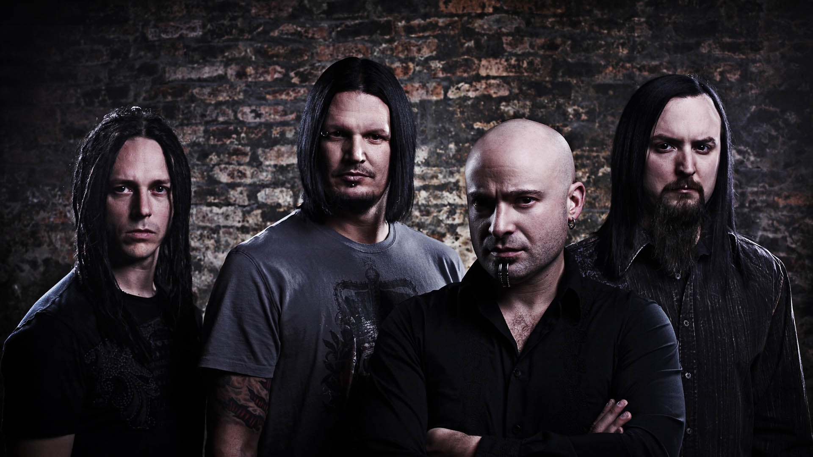
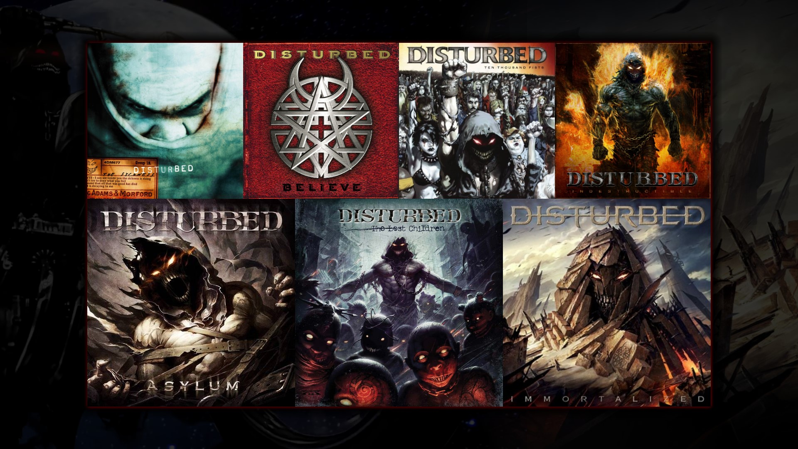

The Metal Band

Disturbed was founded in 1994 in Chicago, Illinois; back then, it was called Brawl. The band was renamed in 1996. Disturbed is known for its heavy metal music style.
The band has released six studio albums, five of which have consecutively debuted at No. 1 on the Billboard 200. Disturbed has also played music in the hard rock and alternative metal genres.
Members
Disturbed has had 6 total members over the course of its career. Currently, the band features four members.
David Draiman arrived in 1996, and he does the lead vocals.
The former band members are Erich Awalt, who was the lead vocalist prior to Draiman, and previous bassist Steve Kmak.
Albums
As stated earlier, Disturbed has released six studio albums, and one "B-Sides" album (Run) to their 2010 album Asylum. Their first album is The Sickness (1997), and their most recent album is Immortalized (2015).
Vivamus quis vehicula diam. Fusce mattis nibh in consequat tristique. Praesent vulputate quam a tellus posuere blandit.
Phasellus vestibulum tellus et ornare consequat. Praesent ultrices placerat tempor. Integer hendrerit tellus magna, ornare luctus odio tincidunt ut.